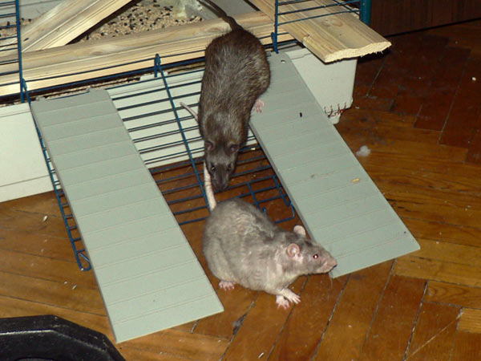
Циклон Б и Терабайт идут на прогулку.
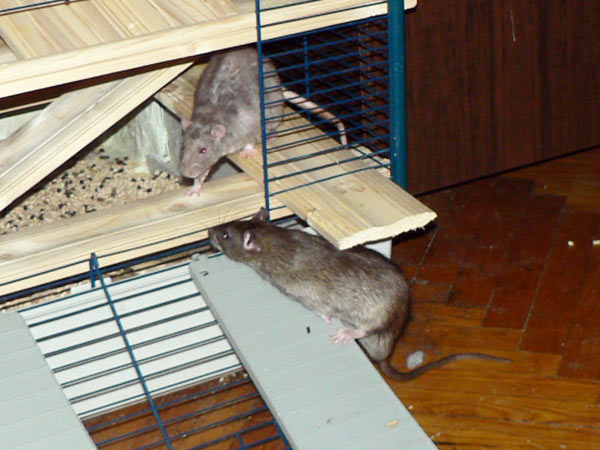
В другой раз: Циклон на прогулку, а Терабайт возвращается.

Циклон Б в задумчивости.
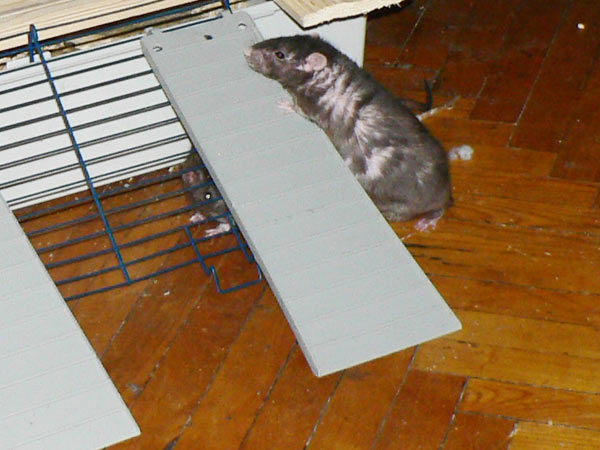
Сентябрь возвращается в клетку. Старичок уже, поэтмоу забраться сбоку сложно...

Пошел в обход по пандусу.
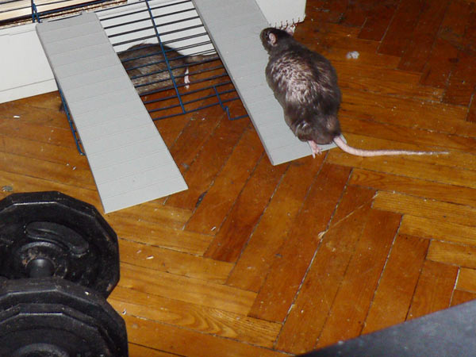
Вот теперь можно цивилизованно взобраться.

Уже почтию...
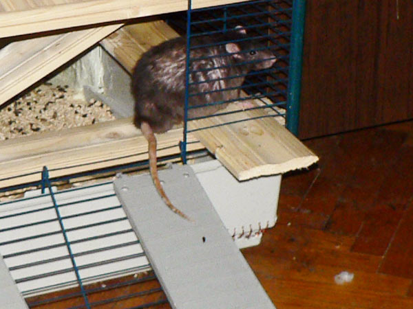
Вот и дома.

Сентябрь на диване — отправили его туда на время уборки клетки.
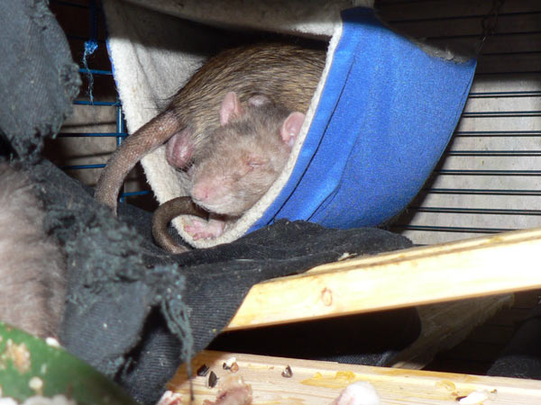
А это уже в клетке. Перед Циклона и тыл Терабайта.
Любят крысы всякие такие теплые гамакообразные нычки.

Сеня решил зачем-то свесить зад с полки.
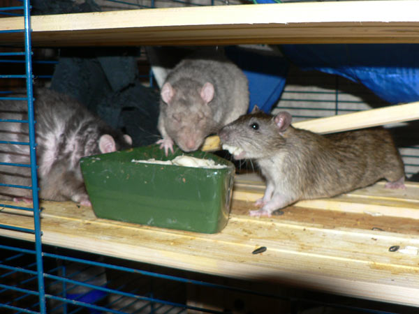
Дюк Нюкем изображает хомяка, бытро крыся еду из кормушки.

— Сеня, что это было?
— Не понял, как-то быстро мелькнуло...
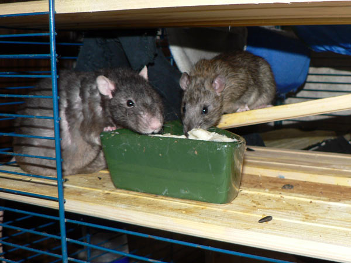
Джон Ди более усидчив и ест не на бегу.

Циклон Б: — А что, семечки все полузгали?
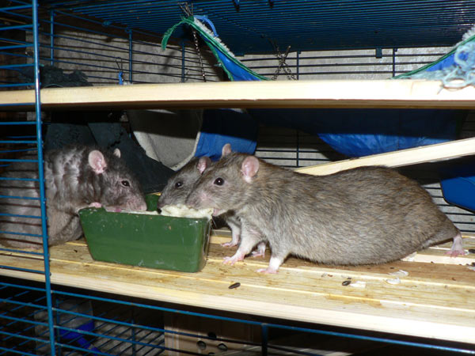
Мелочь, подростково-длинная. Ну и Сеня слева.

Смена состава: Дюк и Джон убежали, прибыли Циклон и
Терабайт.
Сеня трудится во вторую смену.
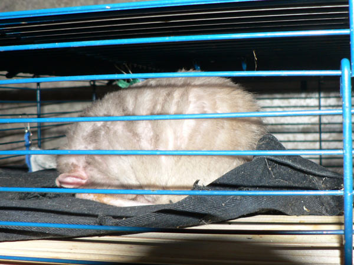
Циклон Б спит на голове.

Сентябрь: — Хорошо я умею джинсы грызть?
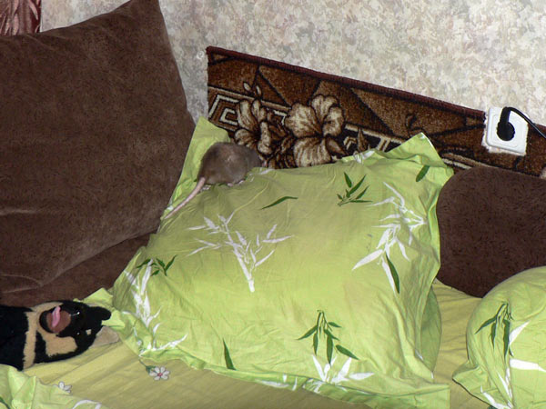
Кто-то из мелких на лежбище проник.

Циклон Б там же.

Сеня плавно перетекает от гамака к кормушке.